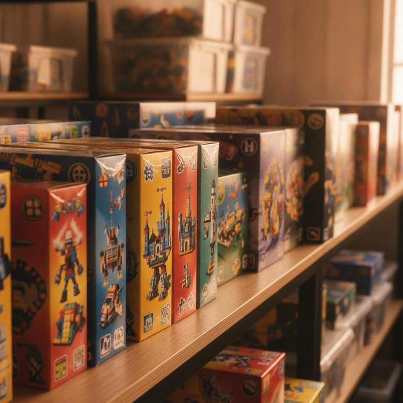

Sets de LEGO retirados que suben de valor (2026)
La retirada corta la oferta mientras la demanda continúa. Aquí te explicamos por qué algunos sets de LEGO retirados se revalorizan, qué temas suelen mantener su valor y cómo seguir los precios reales.
Ranking · 2026Cuando un set de LEGO se retira, a una parte del catálogo le ocurre algo predecible: la oferta se detiene, pero la demanda sigue rodando. Ese desfase es el motor detrás de la conversación sobre el valor de los sets de LEGO retirados, y explica por qué una caja que en su día estaba en tienda puede venderse con una prima meses o años después. La palabra clave es parte. La mayoría de los sets retirados no se convierten en golpes de suerte, y tratar cada caja descatalogada como una inversión es la forma más rápida de pagar de más.
Esta guía explica qué significa realmente la retirada, por qué los precios suelen subir tras el fin de vida, cómo detectar qué sets se están retirando, qué temas tienden a revalorizarse, cuánto y a qué velocidad suelen moverse los valores, cómo comprar antes de la retirada y cómo comprobar la trayectoria real de reventa de un set antes de comprometerte con tu dinero en cualquier sentido.
Qué significa realmente la «retirada»
LEGO produce los sets en tiradas definidas. Cuando un set se retira, la empresa deja de fabricarlo y liquida las existencias restantes por sus canales oficiales. No hay reposición ni reimpresión de ese set exacto con el mismo número. A partir de ese momento, la única oferta es la que ya existe en el mundo: cajas precintadas, sets abiertos pero completos y piezas sueltas.
Las fechas de retirada no siempre se anuncian con mucha antelación, y las etiquetas de «próxima retirada» en LEGO.com son una señal más que una cuenta atrás. Una vez que un set desaparece de verdad de las tiendas, el mercado secundario pasa a fijar el precio, y ahí es donde la revalorización ocurre o no.
¿No sabes cuánto vale tu set? Compara las mejores herramientas gratis →Cómo saber qué sets se están retirando
No puedes comprar antes de la retirada si no sabes qué va a salir del catálogo, así que seguir el calendario es la primera habilidad práctica. Empieza por la sección Próxima retirada de LEGO.com, que señala los sets programados para abandonar la tienda oficial en un plazo de aproximadamente un año. Es la fuente más autorizada, pero deliberadamente vaga en fechas exactas y solo cubre la disponibilidad directa al consumidor, no los minoristas de terceros que pueden tener existencias durante más tiempo.
Más allá de la etiqueta oficial, presta atención a algunas señales de comportamiento. Un set que lleva dos o más años en las estanterías está estadísticamente más cerca del fin de su vida útil, ya que la mayoría de los sets no perennes duran entre dieciocho meses y tres años. Los descuentos persistentes en grandes superficies, la disponibilidad cada vez menor de un número de set concreto y la ausencia llamativa de un set en las actualizaciones del nuevo catálogo de LEGO son todos indicios indirectos. Los rastreadores de retirada mantenidos por la comunidad y las bases de datos de precios recopilan ventanas de cierre previstas para cientos de sets, y contrastar esos calendarios con los anuncios actuales te ayuda a separar las oportunidades genuinas de «próxima retirada» de los sets perennes que se repondrán indefinidamente. Ninguna fuente predice el día exacto, así que trata cada fecha como una ventana, no como una promesa.
Ver el ranking →
Por qué los precios suelen subir tras el fin de vida
La mecánica es sencilla. La fabricación se detiene, así que la oferta es fija y solo puede reducirse a medida que las cajas precintadas se abren y se montan. Mientras tanto, la demanda puede persistir o incluso crecer: nuevos fans descubren un tema querido, un set gana relevancia cultural o una franquicia sigue siendo popular mucho después de que el producto asociado abandonara las estanterías. Oferta fija más demanda estable o creciente empuja los precios al alza.
Hay otros dos factores que importan. El estado precintado alcanza una prima porque es escaso y verificable, y los grandes sets insignia de precio elevado tienden a revalorizarse de forma más fiable que las pequeñas cajas de compra impulsiva, en parte porque menos gente los compró nuevos y menos los conservó precintados. El tiempo también acumula escasez: cuanto más tiempo lleva retirado un set, menos copias impecables quedan. Hay también una capa psicológica. Una vez que un set desaparece oficialmente, el marco de «última oportunidad» que frenaba la compra casual desaparece, y los rezagados que lo saltaron en tienda compiten de repente por un grupo cada vez más reducido.
Temas que tienden a revalorizarse
Ningún tema tiene garantizada la subida, pero históricamente algunas categorías han mostrado un mejor rendimiento tras la retirada:
- Edificios Modulares (Creator Expert / Icons): sets de calidad expositiva con una base de coleccionistas entregada y tiradas largas que aun así se agotan al retirarse.
- UCS Star Wars: los buques insignia de la Ultimate Collector Series combinan un gran número de piezas, la lealtad a la franquicia y una fuerte cultura de caja precintada.
- LEGO Ideas: los sets diseñados por fans suelen producirse en tiradas más cortas, así que la escasez llega antes cuando se retiran.
- Icons y sets de exposición para adultos: vehículos, botánica y construcciones nostálgicas dirigidas a compradores adultos que conservan las cajas intactas.
- Nostalgia licenciada y tie-ins de franquicia: sets vinculados a propiedades duraderas cuya base de fans sobrevive a la película o la serie, manteniendo la demanda activa durante años.
El hilo común es un comprador que valora el set como objeto, no solo como juguete, lo que mantiene viva la demanda una vez que las estanterías se vacían. Los temas dirigidos principalmente a niños pequeños, por el contrario, tienden a comprarse para abrirlos, así que los supervivientes precintados son raros de una manera que no siempre se traduce en una demanda fuerte.
Ver el rankingDescubre cuánto valen de verdad tus sets — compara el top 6, gratis.Ver el ranking →Cuánto y a qué velocidad suelen moverse los valores
Gestionar las expectativas importa tanto como elegir el set correcto. La revalorización de los LEGO retirados es real, pero suele ser gradual, y rara vez se parece a un gráfico bursátil que se dispara de la noche a la mañana. Para los sets que sí rinden, las ganancias suelen acumularse a lo largo de años más que de meses, y el movimiento más pronunciado suele llegar entre uno y tres años después de la retirada, una vez que el exceso de existencias en minoristas se ha agotado y las únicas copias selladas restantes están en manos de coleccionistas.
La velocidad varía según el tema y la escasez. Los sets Ideas de tirada corta y los buques insignia muy queridos pueden consolidarse rápido porque la oferta era escasa desde el principio, mientras que los sets producidos a gran escala pueden derivar durante años antes de mostrar cualquier prima real, si es que llegan a hacerlo. Dos hábitos te mantienen con los pies en la tierra: mide los rendimientos en términos reales descontando el tiempo que tu dinero estuvo parado en una caja, y compara la trayectoria de un set con la de los muchos sets retirados que no fueron a ningún lado. Los ganadores de los titulares se comparten ampliamente; el grupo mucho mayor de rendimientos planos no. Basa tu idea de «a qué velocidad» en la distribución completa, no en los mejores casos, y deja que la curva real de precios de venta de un set fije tus expectativas en lugar de anécdotas.
Ver el ranking →Cómo comprar antes de la retirada
Comprar antes de la retirada es donde los coleccionistas informados capturan el mayor margen, porque pagas el precio minorista (a menudo en oferta) en lugar de una prima post-retirada. La táctica es sencilla de enunciar y fácil de exagerar. Céntrate en sets que combinan señales temáticas fuertes con un calendario real de fin de vida, cómpralos precintados al PVP o por debajo de él y almacénalos correctamente: en vertical, lejos de la luz solar y la humedad, con las esquinas de la caja protegidas. Una caja aplastada o descolorida borra silenciosamente gran parte de la prima con la que contabas.
La disciplina es lo que separa una estrategia del acaparamiento. No compres cincuenta copias de un set por corazonada; el riesgo de concentración es real si ese set resulta ser un rendimiento plano. Prefiere sets que estarías contento de montar o regalar si el mercado no colabora nunca, y conserva recibos y embalajes intactos. Antes de comprometer capital en cualquier pila previa a la retirada, comprueba cómo se comportaron realmente sets comparables del mismo tema tras su retirada, para que tu apuesta se base en un historial y no en el optimismo.
Cómo seguir el valor de un set tras su retirada
Los buenos deseos no son datos. Antes de dar por hecho que un set se está revalorizando, mira por cuánto se vendió realmente, no lo que piden los anuncios optimistas. Los precios de los anuncios te dicen lo que los vendedores esperan; los precios vendidos te dicen lo que los compradores pagaron.
Nuestra opción favorita para seguir precios de venta reales es BrickGains, que muestra el historial de transacciones completadas para que veas la tendencia genuina en lugar de anuncios aspiracionales. Para catálogos de precios y valores de despiece, BrickLink y BrickEconomy merecen consultarse junto con los datos de ventas. Leer el mismo set en dos o tres herramientas evita que una única fuente ruidosa distorsione tu visión.
Fíjate en la forma de la tendencia, no en un solo dato: ¿la línea de precios de venta sube de forma constante, está plana o rebota con poco volumen? Un puñado de ventas dice poco; un patrón coherente a lo largo de muchas transacciones es mucho más fiable.
Precauciones: no todo set retirado sube
Muchos sets retirados se mantienen planos o pierden valor en términos reales una vez que tienes en cuenta los años que tu dinero pasó dentro de una caja de cartón. Los sets comunes con tiradas de producción enormes rara vez se vuelven escasos. Los sets abiertos o incompletos pierden la mayor parte de la prima que disfrutan las cajas precintadas. Los problemas de estado, la falta de instrucciones y las cajas descoloridas por el sol reducen el valor de reventa.
Trata con escepticismo cualquier compra planteada como una «inversión», y nunca pagues una prima elevada asumiendo que la revalorización es inevitable. Los sets que suben son la excepción, y la única forma de identificarlos es consultar los datos reales de reventa en lugar de fiarte del bombo. Sopesa el espacio de almacenamiento, el coste de oportunidad del dinero inmovilizado y el esfuerzo de publicar y enviar cuando finalmente vendas, porque esas fricciones se comen parte de cualquier ganancia nominal. Compra sets que te haría feliz conservar o montar si el mercado nunca coopera, y deja que la revalorización genuina sea un extra en vez de todo el plan.
Ver el ranking 2026 de las mejores herramientas de valor LEGO
Descubre cuánto valen de verdad tus sets — compara el top 6, gratis.
Ver el rankingPreguntas frecuentes
¿Todos los sets de LEGO retirados suben de valor?
No. Solo se revaloriza una parte, normalmente grandes sets insignia de temas favoritos de los coleccionistas que se conservan precintados. Muchos sets comunes de alta producción se mantienen planos o pierden valor en términos reales una vez que tienes en cuenta los años que llevas conservándolos.
¿Por qué se encarecen los sets de LEGO retirados?
La retirada detiene la fabricación, así que la oferta es fija y se reduce lentamente a medida que las cajas precintadas se abren. Cuando la demanda se mantiene estable o crece, esa oferta fija empuja los precios al alza en el mercado secundario.
¿Cómo sé qué sets de LEGO se van a retirar pronto?
Empieza por la sección Próxima retirada de LEGO.com, y luego presta atención a señales de comportamiento como más de dos años en estanterías, descuentos persistentes y disponibilidad cada vez menor. Los rastreadores de retirada de la comunidad recopilan ventanas de cierre previstas, pero trata cada fecha como una ventana y no como un plazo fijo.
¿Cómo sé lo que vale de verdad un set retirado?
Mira los precios de venta, no los precios de los anuncios. Herramientas como BrickGains muestran el historial de transacciones completadas, mientras que BrickLink y BrickEconomy te ayudan a contrastar. Juzga la tendencia general a lo largo de muchas ventas en lugar de un solo anuncio.
¿Qué temas de LEGO tienden a mantener mejor su valor?
Históricamente, los Edificios Modulares, UCS Star Wars, LEGO Ideas y los sets de exposición Icons para adultos han mostrado un mejor rendimiento tras la retirada, en gran parte porque sus compradores los tratan como coleccionables y conservan las cajas precintadas.